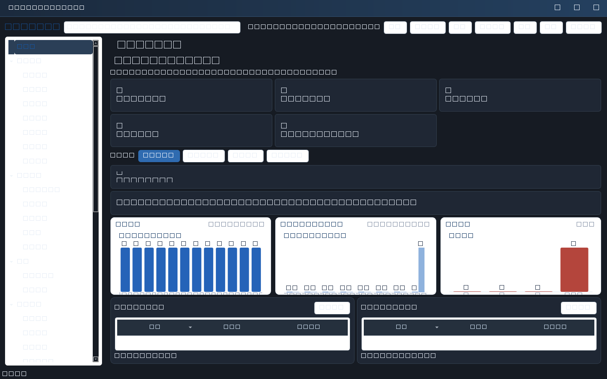
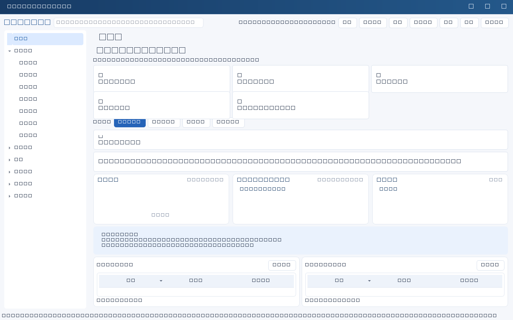

日常重复动作都能用键盘完成；主题与字号保存在本机，不影响服务端数据。
快捷键
| 按键 | 动作 |
|---|---|
| F5 / Ctrl+R | 刷新记录与配置（保留筛选与选中项）。 |
| Ctrl+N | 在当前业务模块新建记录；在检查页新建检查。 |
| Ctrl+E | 编辑当前选中的记录。 |
| Ctrl+H | 查看所选记录的历史版本。 |
| Ctrl+F | 聚焦当前页面搜索框。 |
| Ctrl+B | 对选中记录批量操作。 |
| Ctrl+1 / 2 / 3 / 4 | 跳转 工作台 / 提醒中心 / 数据体检 / 统计看板。 |
| Ctrl+T | 切换浅色 / 深色主题。 |
| Ctrl+= / Ctrl+- / Ctrl+0 | 放大 / 缩小 / 恢复默认字号。 |
| Ctrl+, | 连接设置。 |
| Ctrl+D | 配置工作台卡片。 |
工作台卡片
点击工作台“配置卡片…”或按 Ctrl+D，勾选需要显示的卡片：今日任务、逾期任务、高风险、待决策、30天内到期合同、待处理提醒、体检发现、最高负载负责人。设置保存在本机（QSettings），换机器不影响；把卡片全部取消会提示而不是显示空白页。
主题与字号
深色模式只替换配色，不改变布局与字段；字号支持 0.85—1.45 倍。两者都是本机偏好，不写入业务库，也不改变权限与数据范围。主题与字号仅影响本客户端显示，截图与打印样式不受影响。
边界：快捷键在窗口内生效；弹出表单获得焦点时，Ctrl+N 等会按当前页面语义执行。深色模式未做人工视觉验收，某些第三方控件可能仍显示浅色边框，请以实际显示为准。



